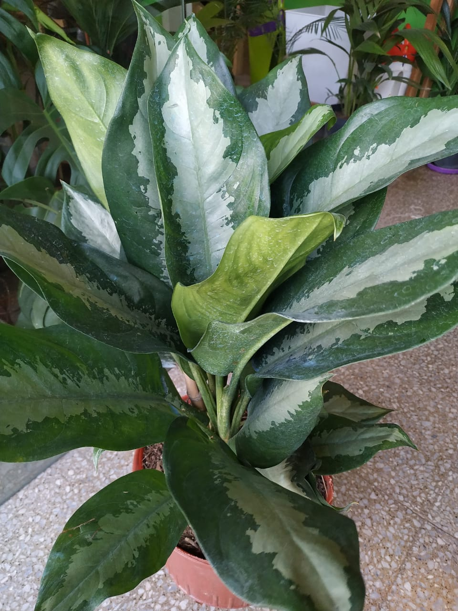
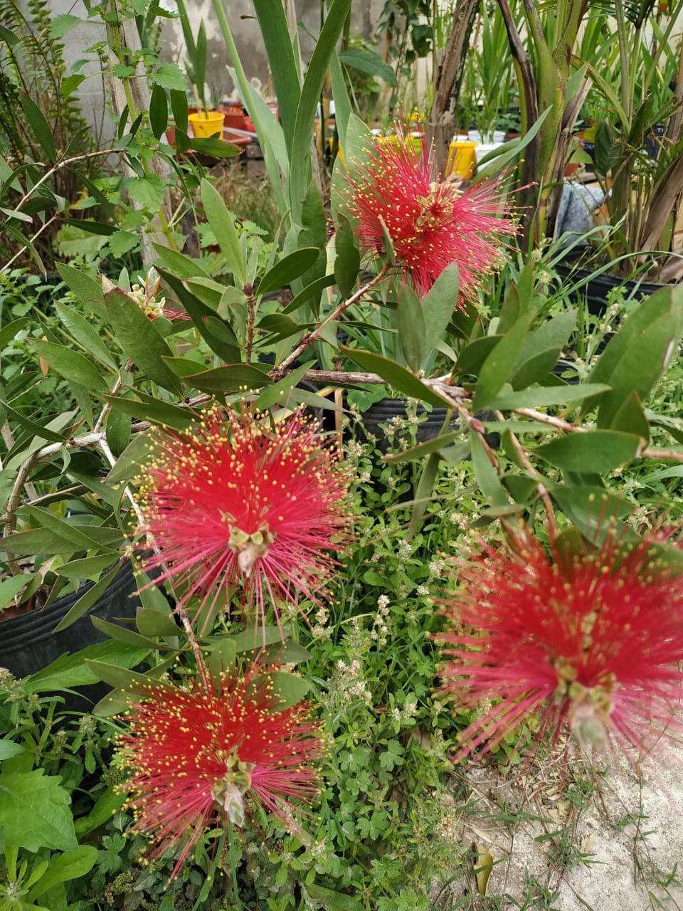
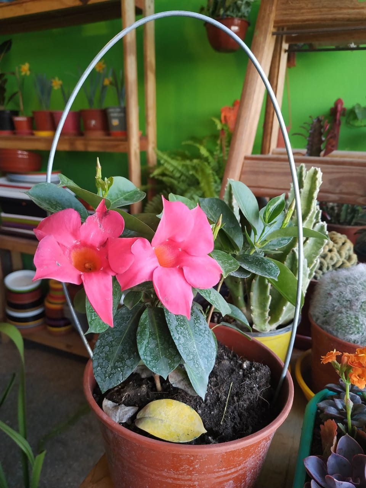

Plantas de interior
-
Aglomena
Aglaonema es un género de 20 especies de plantas de flores perteneciente a la familia Araceae, nativo de las selvas tropicales húmedas del sudoeste de Asia desde Bangladés a Filipinas y norte y sur de China.
-
Calisteno
Callistemon es un género de árboles y arbustos de la familia Myrtaceae, llamado comúnmente limpiatubos o limpiabotellas por la forma de su inflorescencia. Conocido también como calistemo. En Venezuela es conocido con el nombre de Cepillo. En San Juan, Argentina como Cepillito
-
Dipademia
es un género de plantas enredaderas con unas 100 especies perteneciente a la familia Apocynaceae. Son nativas de Centroamérica y Sudamérica.
Plantas de exterior
-
Jazmin Plumangado

"pequeña descripcion de la planta
-
Petuñas

"pequeña descripcion de la planta
-
Santa Rita

"pequeña descripcion de la planta